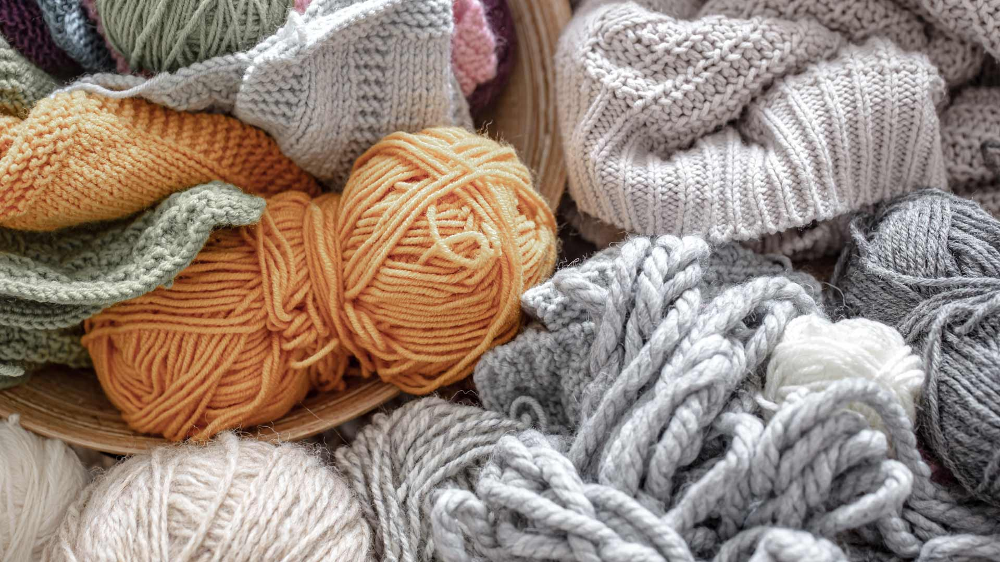

Tradición y Excelencia: Producimos fibras de
lana de alta calidad bajo estándares de bienestar animal
respeto por la tierra.

Calidad en el Origen: Transformamos el cuidado de nuestro
ganado en vellones seleccionados con la máxima finura y suavidad.
Compromiso Sostenible: Ofrecemos una materia prima
noble y natural que conecta la herencia del campo con la industria textil moderna.
Envío gratis
Primera compra
Reembolso
Garantía
Regalos
Clientes frecuentes
Productos
El productor de lanas es el guardián de una tradición milenaria
que transforma el cuidado del ganado en fibra de alta calidad. Su
labor combina la destreza técnica en el manejo de los vellones con un
respeto profundo por los ciclos naturales, logrando obtener una materia prima sostenible,
suave y resistente que es la base fundamental de la industria textil artesanal y moderna.